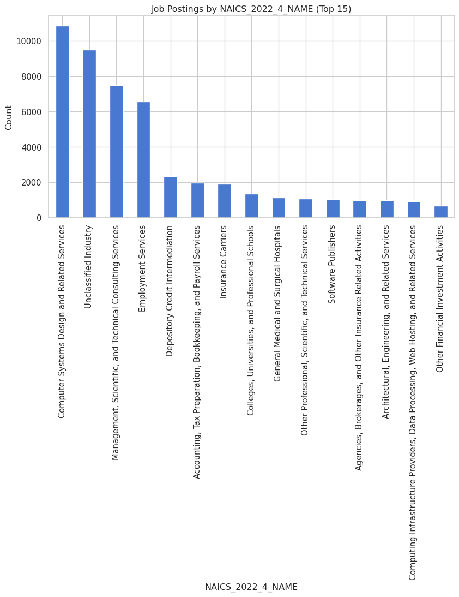
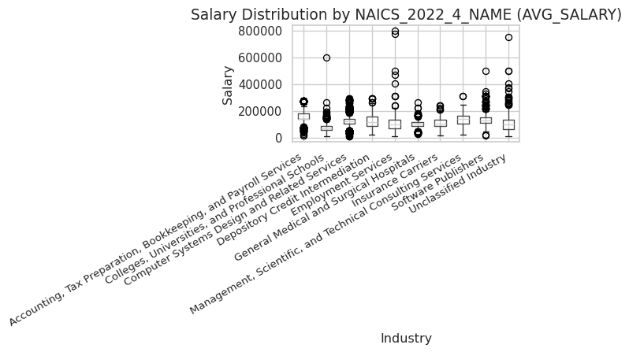
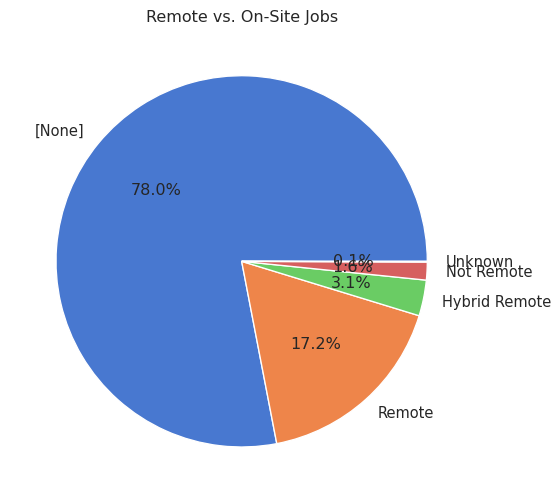

import pandas as pd
import seaborn as sns
import matplotlib.pyplot as plt
import numpy as np
import os
from IPython.display import display
sns.set_theme(style="whitegrid", palette="muted")
df = pd.read_csv("data/lightcast_job_postings.csv", low_memory=False)# Salary setup
if "SALARY_FROM" in df.columns and "SALARY_TO" in df.columns:
df["AVG_SALARY"] = (
pd.to_numeric(df["SALARY_FROM"], errors="coerce") +
pd.to_numeric(df["SALARY_TO"], errors="coerce")
) / 2
salary_candidates = ["AVG_SALARY", "SALARY", "Average_Salary", "AVERAGE_SALARY"]
salary_col = next((c for c in salary_candidates if c in df.columns), None)
# Industry setup
industry_candidates = ["Industry", "NAICS_2022_4_NAME", "LIGHTCAST_SECTORS_NAME"]
industry_col = next((c for c in industry_candidates if c in df.columns), None)
print("Detected salary_col:", salary_col)
print("Detected industry_col:", industry_col)Detected salary_col: AVG_SALARY
Detected industry_col: NAICS_2022_4_NAME# Job postings by Industry
if industry_col:
plt.figure(figsize=(10,5))
df[industry_col].value_counts().head(15).plot(kind="bar")
plt.title(f"Job Postings by {industry_col} (Top 15)")
plt.xlabel(industry_col)
plt.ylabel("Count")
plt.tight_layout()
plt.savefig("figures/job_postings_by_industry.png", dpi=300, bbox_inches="tight")
display(plt.gcf())
plt.close()/tmp/ipykernel_7737/121335137.py:8: UserWarning:
Tight layout not applied. The bottom and top margins cannot be made large enough to accommodate all Axes decorations.

Analysis Computer Systems Design and Related Services accounts for the largest number of job postings, followed by Management, Scientific, and Technical Consulting Services. This indicates that the technology and consulting industries are currently the primary sectors for hiring. Job opportunities are primarily concentrated in areas related to digital transformation and information technology.
# Salary distribution by Industry
if salary_col and industry_col:
df[salary_col] = pd.to_numeric(df[salary_col], errors="coerce")
tmp = df[[industry_col, salary_col]].dropna()
if not tmp.empty:
top_ind = tmp[industry_col].value_counts().head(10).index
tmp = tmp[tmp[industry_col].isin(top_ind)]
plt.figure(figsize=(14,8))
tmp.boxplot(column=salary_col, by=industry_col)
plt.title(f"Salary Distribution by {industry_col} ({salary_col})", fontsize=14)
plt.suptitle("")
plt.xlabel("Industry", fontsize=12)
plt.ylabel("Salary", fontsize=12)
plt.xticks(rotation=30, ha="right", fontsize=10)
plt.tight_layout()
plt.savefig("figures/salary_distribution_by_industry.png", dpi=300, bbox_inches="tight")
display(plt.gcf())
plt.close()
<Figure size 1344x768 with 0 Axes>Analysis Salary distribution shows that finance, healthcare, and consulting industries have relatively high salaries, while traditional industries like education and accounting have relatively concentrated salaries with a lower range. However, there is a large dispersion in salaries in financial services, indicating that there are many high-paying positions but overall competition is fierce.
# Remote vs On-site
remote_col = next((c for c in ["REMOTE_TYPE_NAME","REMOTE_TYPE","Remote_Type","REMOTE_GROUP"] if c in df.columns), None)
if remote_col:
plt.figure(figsize=(6,6))
df[remote_col].fillna("Unknown").value_counts().plot(kind="pie", autopct="%1.1f%%")
plt.title("Remote vs. On-Site Jobs")
plt.ylabel("")
plt.tight_layout()
plt.savefig("figures/remote_vs_onsite.png", dpi=300, bbox_inches="tight")
display(plt.gcf())
plt.close()
print("Final Columns:", df.columns.tolist())
Final Columns: ['ID', 'LAST_UPDATED_DATE', 'LAST_UPDATED_TIMESTAMP', 'DUPLICATES', 'POSTED', 'EXPIRED', 'DURATION', 'SOURCE_TYPES', 'SOURCES', 'URL', 'ACTIVE_URLS', 'ACTIVE_SOURCES_INFO', 'TITLE_RAW', 'BODY', 'MODELED_EXPIRED', 'MODELED_DURATION', 'COMPANY', 'COMPANY_NAME', 'COMPANY_RAW', 'COMPANY_IS_STAFFING', 'EDUCATION_LEVELS', 'EDUCATION_LEVELS_NAME', 'MIN_EDULEVELS', 'MIN_EDULEVELS_NAME', 'MAX_EDULEVELS', 'MAX_EDULEVELS_NAME', 'EMPLOYMENT_TYPE', 'EMPLOYMENT_TYPE_NAME', 'MIN_YEARS_EXPERIENCE', 'MAX_YEARS_EXPERIENCE', 'IS_INTERNSHIP', 'SALARY', 'REMOTE_TYPE', 'REMOTE_TYPE_NAME', 'ORIGINAL_PAY_PERIOD', 'SALARY_TO', 'SALARY_FROM', 'LOCATION', 'CITY', 'CITY_NAME', 'COUNTY', 'COUNTY_NAME', 'MSA', 'MSA_NAME', 'STATE', 'STATE_NAME', 'COUNTY_OUTGOING', 'COUNTY_NAME_OUTGOING', 'COUNTY_INCOMING', 'COUNTY_NAME_INCOMING', 'MSA_OUTGOING', 'MSA_NAME_OUTGOING', 'MSA_INCOMING', 'MSA_NAME_INCOMING', 'NAICS2', 'NAICS2_NAME', 'NAICS3', 'NAICS3_NAME', 'NAICS4', 'NAICS4_NAME', 'NAICS5', 'NAICS5_NAME', 'NAICS6', 'NAICS6_NAME', 'TITLE', 'TITLE_NAME', 'TITLE_CLEAN', 'SKILLS', 'SKILLS_NAME', 'SPECIALIZED_SKILLS', 'SPECIALIZED_SKILLS_NAME', 'CERTIFICATIONS', 'CERTIFICATIONS_NAME', 'COMMON_SKILLS', 'COMMON_SKILLS_NAME', 'SOFTWARE_SKILLS', 'SOFTWARE_SKILLS_NAME', 'ONET', 'ONET_NAME', 'ONET_2019', 'ONET_2019_NAME', 'CIP6', 'CIP6_NAME', 'CIP4', 'CIP4_NAME', 'CIP2', 'CIP2_NAME', 'SOC_2021_2', 'SOC_2021_2_NAME', 'SOC_2021_3', 'SOC_2021_3_NAME', 'SOC_2021_4', 'SOC_2021_4_NAME', 'SOC_2021_5', 'SOC_2021_5_NAME', 'LOT_CAREER_AREA', 'LOT_CAREER_AREA_NAME', 'LOT_OCCUPATION', 'LOT_OCCUPATION_NAME', 'LOT_SPECIALIZED_OCCUPATION', 'LOT_SPECIALIZED_OCCUPATION_NAME', 'LOT_OCCUPATION_GROUP', 'LOT_OCCUPATION_GROUP_NAME', 'LOT_V6_SPECIALIZED_OCCUPATION', 'LOT_V6_SPECIALIZED_OCCUPATION_NAME', 'LOT_V6_OCCUPATION', 'LOT_V6_OCCUPATION_NAME', 'LOT_V6_OCCUPATION_GROUP', 'LOT_V6_OCCUPATION_GROUP_NAME', 'LOT_V6_CAREER_AREA', 'LOT_V6_CAREER_AREA_NAME', 'SOC_2', 'SOC_2_NAME', 'SOC_3', 'SOC_3_NAME', 'SOC_4', 'SOC_4_NAME', 'SOC_5', 'SOC_5_NAME', 'LIGHTCAST_SECTORS', 'LIGHTCAST_SECTORS_NAME', 'NAICS_2022_2', 'NAICS_2022_2_NAME', 'NAICS_2022_3', 'NAICS_2022_3_NAME', 'NAICS_2022_4', 'NAICS_2022_4_NAME', 'NAICS_2022_5', 'NAICS_2022_5_NAME', 'NAICS_2022_6', 'NAICS_2022_6_NAME', 'AVG_SALARY']Analysis Remote work accounts for approximately 17%, while traditional on-site work still accounts for over 70%. This suggests that while remote positions exist, most companies still maintain an offline work model. Hybrid remote work accounts for a small percentage and is not currently supported by companies, but it may become a trend in the future.
Summary This EDA reveals the following:
Hiring is concentrated in the IT and consulting industries, demonstrating a clear demand for digital transformation.
Salaries in finance and healthcare are high and fluctuate widely, indicating fierce competition for certain positions within these sectors.
Remote positions remain a minority, but their growth potential warrants attention.